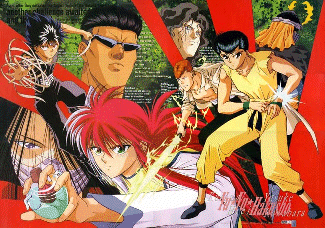

Yuu Yuu Hakusho

Useful Links
Anime Pocket Guide entry
Anime Web Turnpike: Yuu Yuu Hakusho Links
Gameboy Games
Yuu Yuu Hakusho
Yuu Yuu Hakusho Ankoku Bujutsukai
Yuu Yuu Hakusho Makai no Tobira
Yuu Yuu Hakusho Makai Touitsu
Game Gear Games
Yuu Yuu Hakusho
Yuu Yuu Hakusho 2 Gekitou! Shichikyou no Tatakai
Genesis Games
Yuu Yuu Hakusho Makyou Touitsusen
Yuu Yuu Hakusho Gaiden
SNES Games
Yuu Yuu Hakusho
Yuu Yuu Hakusho 2 Kakutou no Shou
Yuu Yuu Hakusho Final Makai Saikyou Retsuden
Yuu Yuu Hakusho Tokubetuhen
Anime Video Game Resource Center © 1998 by
Luis A. Cruz